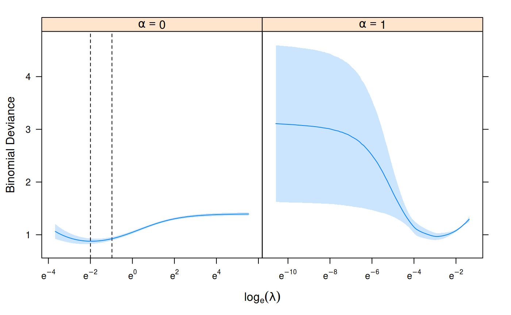

This function performs model validation by k-fold cross validation for
models fit with sgdnet() over the entire regularization path and/or
various elastic net penalties.
cv_sgdnet(x, y, alpha = 1, lambda = NULL, nfolds = 10, foldid = NULL, type.measure = c("deviance", "mse", "mae", "class", "auc"), ...)
| x | input matrix |
|---|---|
| y | response variable |
| alpha | elastic net mixing parameter; vectors of values are allowed
(unlike in |
| lambda | regularization strength |
| nfolds | number of folds (k) -- 3 is the minimum allowed |
| foldid | a vector of fold identities of the same length as the number of observations |
| type.measure | the type of error, one of ("deviance" (default), "mse" (mean-squared error), "mae" (mean absolute error), "class" (misclassification rate), "auc" (area under the curve)); see Measures to find out what types each family has available. |
| ... | arguments passed on to |
An object of class 'cv_sgdnet' with the following items:
alphathe elastic net mixing parameter used
lambdaa list of lambda values of the same length as alpha
cv_summarya data.frame summarizing the prediction error across
the regularization path with columns alpha, lambda,
mean, sd, ci_lo, ci_up
cv_rawthe raw cross-validation scores as a list of the
same length as alpha, each item a matrix with
the error for each fold as a row and each value of
lambda in columns.
namethe type of prediction error used
fita fit from sgdnet() to the full data set based on the
alpha with the best cross-validation score
alpha_minthe alpha corresponding to the fit with the best
cross-validation performance
lambda_minthe lambda corresponding to the fit with the best
cross-validation performance
lambda_1sethe largest lambda with a cross-validation performance
within one standard deviation of the one
coresponding to lambda_min
The primary usage of this model is to tune for values of lambda and
alpha. This function will randomly divide the
data into \(k\) folds. For each fold, the remaining \(k-1\) will
be used to train a model across a regularization path, and optionally a
range of alpha. The fold that is left out
is then used to measure the performance of the model. We proceed across
all the folds, which means that each observation is used exactly once for
validation, and finally average our results across all the folds.
| Family | deviance | mse | mae | class | auc |
gaussian | x (mse) | x | x | ||
binomial | x | x | x | x | x |
multinomial | x | x | x | x | |
mgaussian | x (mse) | x | x |
set.seed(1) n <- nrow(heart$x) train_ind <- sample(n, floor(0.8*n)) cv_fit <- cv_sgdnet(heart$x[train_ind, ], heart$y[train_ind], family = "binomial", nfolds = 7, alpha = c(0, 1)) plot(cv_fit)predict(cv_fit, heart$x[-train_ind, ], s = "lambda_min")#> 1 #> [1,] 2.2479151094 #> [2,] 0.7593811964 #> [3,] 2.8425768431 #> [4,] 0.3016274228 #> [5,] -1.0478586288 #> [6,] -0.4930121447 #> [7,] -1.0112056031 #> [8,] -2.0438146846 #> [9,] 0.4794537796 #> [10,] -1.6029854978 #> [11,] -0.8969722629 #> [12,] -2.1600605091 #> [13,] -1.7950100750 #> [14,] -0.5454289534 #> [15,] -1.3613984254 #> [16,] 1.8067059574 #> [17,] 1.0289516676 #> [18,] -2.4115449964 #> [19,] -2.4756154088 #> [20,] 0.2560747404 #> [21,] -0.9413765761 #> [22,] 0.5367303978 #> [23,] 0.8454294603 #> [24,] 1.8100445098 #> [25,] 1.4801452214 #> [26,] -1.2988129651 #> [27,] 1.4447150750 #> [28,] 0.2350535311 #> [29,] -2.2792424338 #> [30,] -0.3926007879 #> [31,] 2.2330440056 #> [32,] 1.0043655231 #> [33,] -1.0269839455 #> [34,] -3.1038602363 #> [35,] -0.2653698946 #> [36,] -0.0898137460 #> [37,] 2.6513764515 #> [38,] -1.2904468004 #> [39,] -2.5927985200 #> [40,] -1.9642630951 #> [41,] -2.0561972698 #> [42,] 0.1131268262 #> [43,] -0.5206853245 #> [44,] 0.0009660336 #> [45,] 1.5330710823 #> [46,] -1.6903915882 #> [47,] -0.2803607537 #> [48,] 2.0422279700 #> [49,] -2.3088705315 #> [50,] 1.5874126736 #> [51,] -1.7483501348 #> [52,] 0.9028309555 #> [53,] -1.0605165706 #> [54,] -0.4990009104